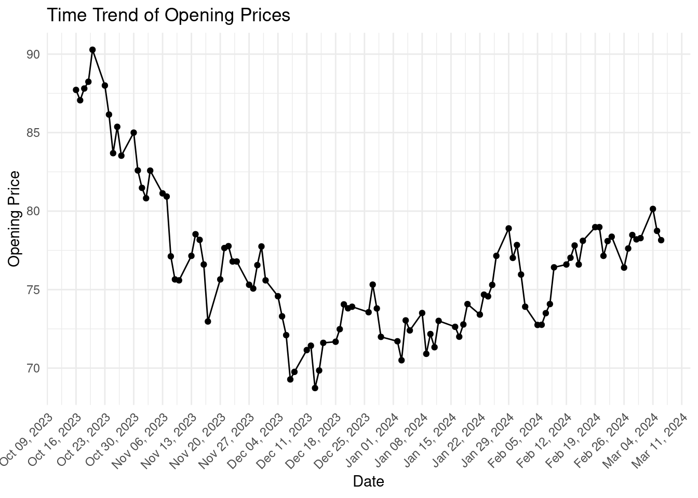
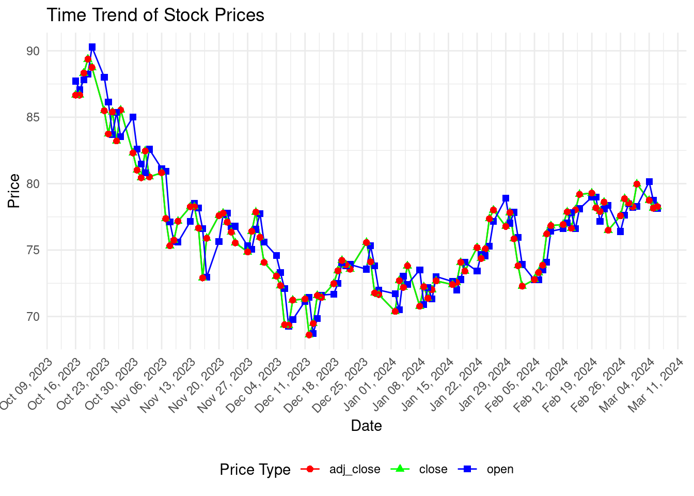

22 Class Activity 16
22.1 Group Activity 1
22.1.1 a. Scrape the first table in List_of_NASA_missions wiki page. Additionally, use janitor::clean_names() to clean the column names and store the resulting table as NASA_missions.csv in your working folder.
Click for answer
wiki_NASA <- "https://en.wikipedia.org/wiki/List_of_NASA_missions"
# Scrape the data and write the first table to a CSV file
bow(wiki_NASA) %>%
scrape() %>%
html_nodes("table") %>%
.[[1]] %>%
html_table(fill = TRUE) %>%
janitor::clean_names() %>%
write_csv("NASA_missions.csv")22.2 Group Activity 2
22.2.1 a. How do you scrape a table from a web page using rvest, clean the column names with janitor, and prepare the data for analysis in R?
22.2.2 b. Write the R code to create a time trend plot of opening prices from the scraped data using ggplot2.
Click for answer
ggplot(ticker, aes(x = date, y = open)) +
geom_line() + # Plot lines
geom_point() + # Add points
scale_x_date(date_labels = "%b %d, %Y", date_breaks = "1 week") +
labs(title = "Time Trend of Opening Prices", x = "Date", y = "Opening Price") +
theme_minimal() +
theme(axis.text.x = element_text(angle = 45, hjust = 1)) 
22.2.3 c. How can you transform the data into a long format suitable for plotting multiple price types with ggplot2?
Click for answer
ticker_long <- ticker %>%
pivot_longer(cols = c(open, close, adj_close), names_to = "PriceType", values_to = "Price")
22.2.4 d. Show how to create a ggplot2 visualization that includes lines and points, with different colors and shapes for each price type, and make the x-axis dates legible.
Click for answer
ggplot(ticker_long, aes(x = date, y = Price, color = PriceType)) +
geom_line() +
geom_point(aes(shape = PriceType), size = 2) + # Different shapes for each price type
scale_color_manual(values = c("open" = "blue", "close" = "green", "adj_close" = "red")) +
scale_x_date(date_labels = "%b %d, %Y", date_breaks = "1 week") +
labs(title = "Time Trend of Stock Prices", x = "Date", y = "Price") +
theme_minimal() +
theme(
axis.text.x = element_text(angle = 45, hjust = 1),
legend.position = "bottom"
) +
guides(shape = guide_legend(title = "Price Type"), color = guide_legend(title = "Price Type"))
22.3 Group Activity 3
In this activity, you’ll scrape web data using rvest and tidy up the results into a well-formatted table. Start by extracting job titles from a given URL, then gather the associated company names, and trim any leading or trailing whitespace from the location data. Next, retrieve the posting dates and the URLs for the full job descriptions. Finally, combine all these elements into a single dataframe, ensuring that each piece of information aligns correctly. Your task is to produce a clean and informative table that could be useful for job seekers. To facilitate the selection of the correct CSS selectors, you may find the SelectorGadget Chrome extension particularly useful.
url <- "https://realpython.github.io/fake-jobs/"Click for answer
title <- bow(url) %>% scrape() %>% html_elements(css = ".is-5") %>% html_text() # part 1
company <- bow(url) %>% scrape() %>% html_elements(css = ".company") %>% html_text() # part 2
location <- bow(url) %>% scrape() %>% html_elements(css = ".location") %>% html_text() %>% str_trim() # part 3
time <- bow(url) %>% scrape() %>% html_elements(css = "time") %>% html_text() # part 4
html <- bow(url) %>% scrape() %>% html_element(css = ".card-footer-item+ .card-footer-item") %>% html_attr("href") # part 5
# Create a dataframe
tibble(title = title, company = company, location = location, time = time, html = html) # port 6# A tibble: 100 × 5
title company location time html
<chr> <chr> <chr> <chr> <chr>
1 Senior Python Developer Payne, Ro… Stewart… 2021… http…
2 Energy engineer Vasquez-D… Christo… 2021… http…
3 Legal executive Jackson, … Port Er… 2021… http…
4 Fitness centre manager Savage-Br… East Se… 2021… http…
5 Product manager Ramirez I… North J… 2021… http…
6 Medical technical officer Rogers-Ya… Davidvi… 2021… http…
7 Physiological scientist Kramer-Kl… South C… 2021… http…
8 Textile designer Meyers-Jo… Port Jo… 2021… http…
9 Television floor manager Hughes-Wi… Osborne… 2021… http…
10 Waste management officer Jones, Wi… Scottto… 2021… http…
# ℹ 90 more rows